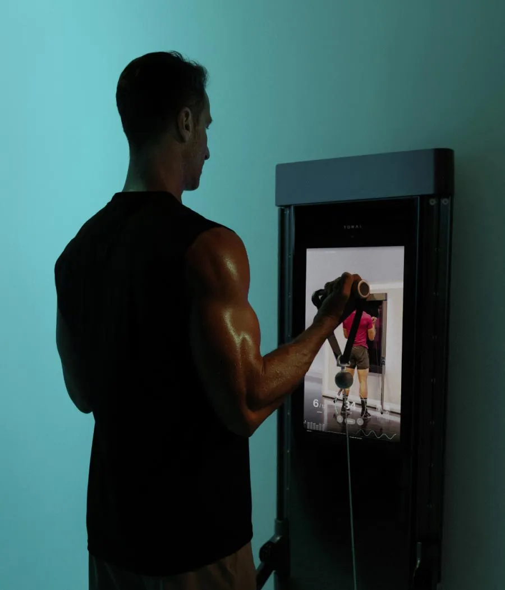
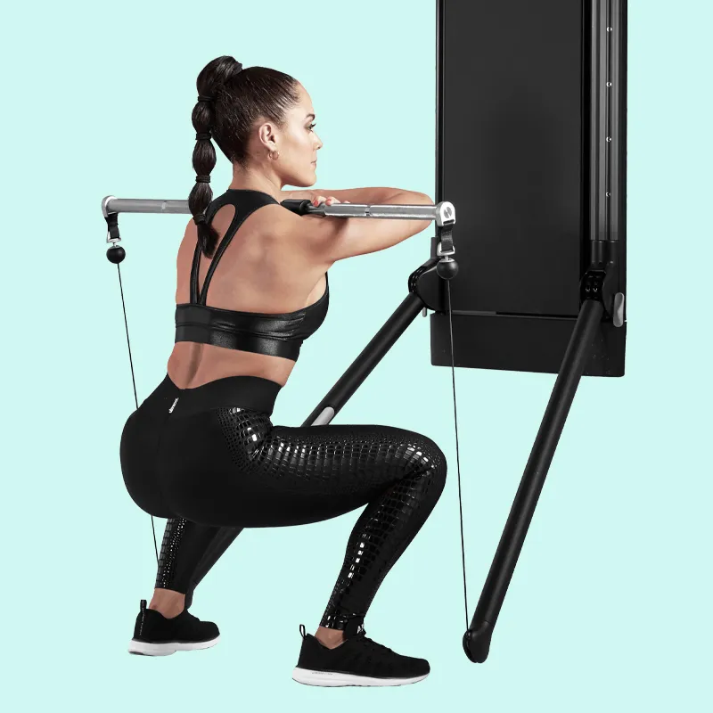
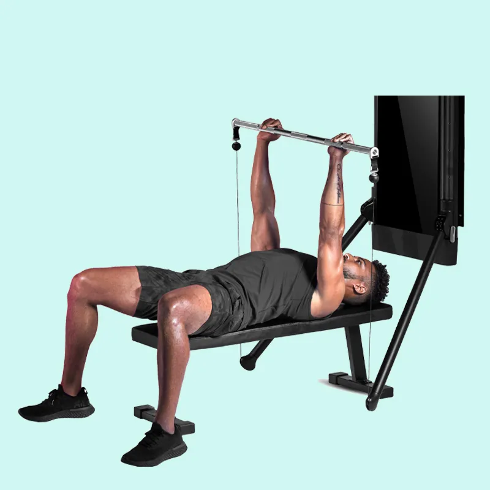
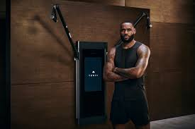

Présentation de Tonal
Tonal est un appareil de musculation intelligent, combinant technologie digitale, intelligence artificielle et coaching virtuel. Il permet un entraînement complet à domicile, sans poids traditionnels.

Fonctionnalités Innovantes
- Charge numérique intelligente jusqu’à 90 kg.
- Programmes personnalisés selon les objectifs.
- Coaching vidéo interactif et suivi des performances.

Avantages
- Gain d’espace : appareil compact et mural.
- Suivi précis de la progression en temps réel.
- Expérience immersive avec IA et coaching intégré.

Impact sur le Secteur du Fitness
Tonal redéfinit le home fitness. En alliant innovation et accessibilité, il rend l’entraînement efficace et personnalisé disponible à domicile, même sans coach physique.

Limites
- Coût élevé : environ 3000€ hors abonnement.
- Nécessite une bonne connexion Internet.
- Environnement limité : uniquement intérieur.